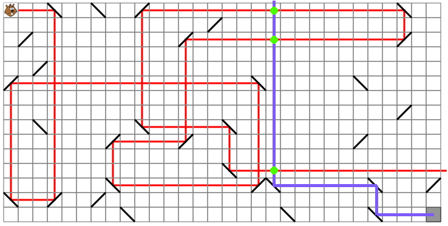
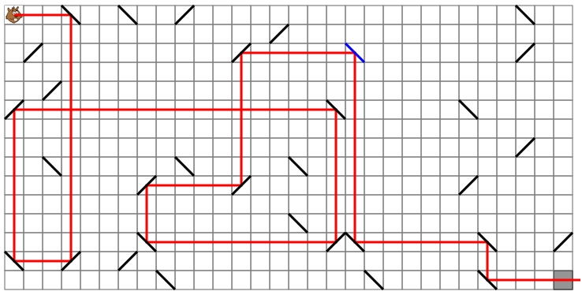

Solution
Pour trouver la position du miroir, il fallait trouver une stratégie.
- Une stratégie naïve consiste à essayer toutes les cases dans l'ordre. Mais cela prend beaucoup de temps.
- Une stratégie déjà plus astucieuse consiste à essayer toutes les cases par lesquelles passe le laser, dans l'ordre en partant de Castor. On finit par trouver la solution, mais cela prend encore pas mal de temps.
- Une meilleure stratégie consiste à partir de la fin. On voit tout de suite que le laser ne peut pas atteindre le coin gris par le haut, à cause du miroir qui se trouve juste au dessus. On sait donc que le laser va arriver par la gauche, et on peut donc remonter le trajet par lequel il peut arriver, comme illustré ci-dessous.

La position du miroir à placer se trouver forcément à une intersection entre ce trait et le tracé rouge du laser. Il n'y a donc que 3 positions à essayer, marquées par des gros points verts. La seconde intersection correspond à la bonne réponse.

C'est de l'informatique !
Les trois stratégies décrites ci-dessus correspondent à des « algorithmes », c'est-à-dire à des suites précises d'opérations permettant de trouver la solution. Certains algorithmes amènent à la solution plus rapidement que d'autres. On parle alors d'algorithmes plus « efficaces ».
Le premier algorithme proposé ici examine toutes les solutions possibles, et il y en a beaucoup. Le second restreint l'ensemble des solutions possibles, en exploitant l'observation que le miroir doit forcément se trouver sur le parcours du laser. Le troisième restreint encore davantage l'ensemble des solutions possibles, en remarquant que le miroir se trouve forcément à l'intersection de deux trajectoires.
Effectuer des observations permettant de restreindre la taille des solutions possibles à examiner est une technique essentielle en « algorithmique », la science des algorithmes. De même, partir de la fin est une approche qui amène très souvent à des algorithmes plus efficaces.
Partir de la fin n'est pas toujours très intuitif, comme par exemple dans ce sujet, où l'on a naturellement tendance à suivre la progression du laser en partant du début. Cependant, c'est en se forçant à voir les problèmes autrement que l'on arrive souvent à concevoir des algorithmes plus efficaces.